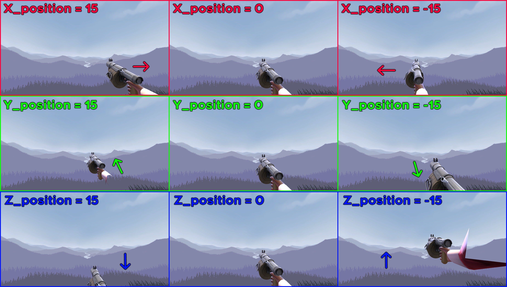
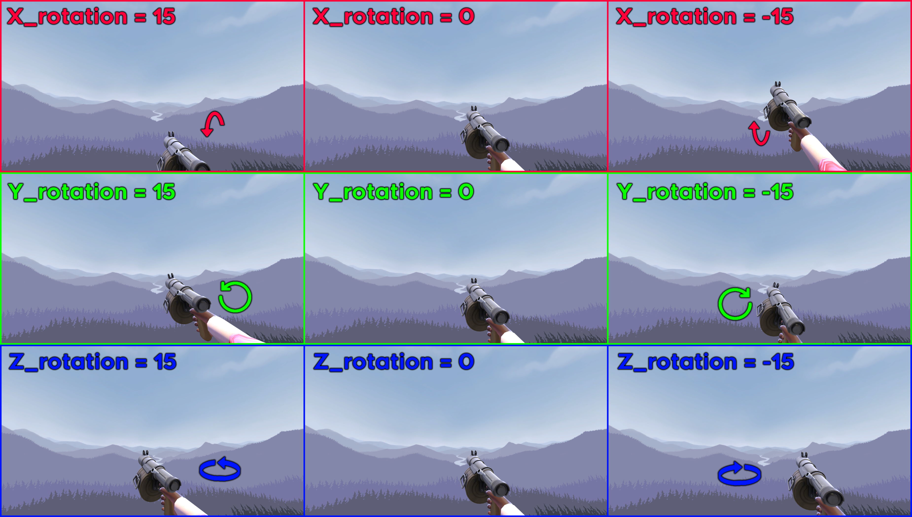

What you can do with it
Horsie's Viewmodel Editor is a Team Fortress 2 modding tool. Pick the settings
you want and it edits the viewmodel animations and packs them into a VPK in
your tf/custom folder.
Move and rotate
Reposition any viewmodel on the X, Y and Z axes. Make centered guns or build your own layout.
Hide anything
Hide whole weapons or only specific animations such as draws, reloads and attacks.
Static animations
Stop draws, reloads and attacks from moving. Works on most animations in the game.
Remove the left arm
Remove the left arm from most weapons, even ones where it is normally hidden.
Keep effects visible
Keep medigun beams, flamethrower flames, tracers and spy backstab animations while hidden.
Custom animations
Drop in custom viewmodel animation VPKs. The editor checks compatibility and applies your settings.
How to install on Linux
You need Wine, Wine Mono (or Mono), and the Source SDK tools. vpk
comes with the SDK, but the editor also includes a Python packer, so Python 3
alone is enough for packing.
- Install the basics. Wine and Python 3 are enough to start. The commands for your distro are below.
- Download the port. Grab the latest release from GitHub Releases or clone the repository.
- Put the folder in your game. Place it in
.../Team Fortress 2/tf/(recommended) ortf/custom/. - Edit your settings. Open
settings_scout.txt,settings_soldier.txt, and so on, and change the values you want. - Run it. Close TF2 first, then run
./start.shand pick your classes. The mod is written totf/custom/__Horsie'sViewmodelEditor.vpk.
# Debian / Ubuntu / Mint
sudo apt install wine python3
# Arch Linux
sudo pacman -S wine python3
# Fedora
sudo dnf install wine python3
# Then
chmod +x start.sh
./start.sh
Wine Mono: run winecfg once and accept the Mono prompt.
If ~/.wine/drive_c/windows/mono exists, it worked. The Mono package in
Ubuntu/Mint is missing Microsoft.VisualBasic, which Crowbar needs, so use
Wine Mono there.
studiomdl: the Linux SDK depot has vpk but no
studiomdl. Point the editor at a Windows SDK 2013 build:
STUDIOMDL=~/sdk2013mp-win/bin/studiomdl.exe ./start.sh. Every tool can be
overridden with HLEXTRACT=... CROWBAR=... STUDIOMDL=... VPK=... ./start.sh.
Steam Deck and desktop Linux
Because the editor runs under Wine, it also runs on the Steam Deck in Desktop Mode.
The dependencies are the same as any Arch-based Linux install: Wine, Wine Mono and
the Source SDK tools. Install them with pacman (or your preferred
method), then follow the same steps above.
Supported systems
Any Linux distribution that can run Wine and the Source SDK tools: Arch, Ubuntu, Mint, Fedora, and SteamOS on the Steam Deck.
No Windows, no VM
The original tool shipped only Windows batch files. This port replaces them with bash scripts and keeps the same settings and animation data.
Fixed Viewmodels support
Drop the Fixed Viewmodels VPK into fixed viewmodels addon/ and run the editor again. It is applied automatically on the next run.
Position and rotation guides
Each weapon has position and rotation options. These guides show which axis does what, so you can dial in a centered gun or a custom viewmodel position.


Frequently asked questions
Does Horsie's Viewmodel Editor work on Linux?
Yes. This project is the Linux port. The original tool only shipped Windows batch files, so this port replaces them with bash scripts and runs the Windows helper tools through Wine.
Does it work on the Steam Deck?
Yes, in Desktop Mode. The requirements are the same as any other Linux machine: Wine, Wine Mono and the Source SDK tools.
Do I need Windows or a virtual machine?
No. You need Wine and the Source SDK tools. Everything else runs from ./start.sh.
Will this get me VAC banned?
It only changes client-side viewmodel animations and packs them into a tf/custom VPK, the same way any viewmodel mod works. It does not touch the game executable or how you connect to servers. Servers with sv_pure can reject custom content, but that is not a ban.
Where do I download it?
Use the Releases page or the green Code button on the GitHub repository.
It says "Wrong folder" or "Game is currently running"
Move the editor folder into .../Team Fortress 2/tf/ or tf/custom/ and run it from there. Close Team Fortress 2 before installing: the game keeps the VPK locked while it is open.